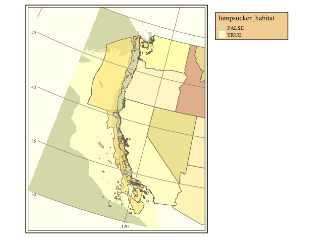

We map potential areas of marine aquaculture for the super cute Pacific spiny lumpsucker (Eumicrotremus orbis)
library(tidyverse)
library(mapview)
library(raster)
library(sf)
library(units)
library(tmap)
library(USAboundaries)
Key information for optimal growth:
- Sea surface temperatures between 12 and 18 degrees Celsius
- Net Primary Productivity between 2.6 and 3 mgC/m2/day
## Loading the data
west_coast <- st_read("shapefiles/mpas_westcoast.shp", quiet = TRUE)
sst <- stack( list.files('rasters', pattern = 'average_', full.names = T) )
npp <- raster('rasters/annual_npp.tif')
# convert units and projections
#K_factor <- as.numeric(set_units(set_units(0, "Celsius"), "K"))
sstAvg <- mean(sst) %>% raster::calc(fun = function(x) x - 273.15)
sstProj <- projectRaster(sstAvg, crs = crs(npp))
names(sstProj) <- "sst"
# get a vector layer with state boundary data, also in the local projection
land <- us_states() %>%
st_transform(crs(npp, asText=TRUE))
habitat_stack <- stack(
list(
sst = raster::calc(sstProj, function(x) between(x, 12, 18)),
mpp = raster::calc(npp, function(x) between(x, 2.6, 3))
)
)
## Where temp and net productivity are both suitable:
habitat <- habitat_stack %>%
sum() %>%
calc(function(x) x == 2)
names(habitat) <- "lumpsucker_habitat"
tm_shape(habitat) +
tm_raster("lumpsucker_habitat") +
tm_shape(land) +
tm_polygons("state_name", legend.show = FALSE) +
tm_shape(west_coast) +
tm_polygons("State", legend.show = FALSE, alpha = 0.6, palette = terrain.colors(8)) +
tm_grid(projection = "longlat", n.y = 6, n.x = 2) +
tm_style_classic() +
tm_layout(legend.outside = TRUE,
legend.bg.color = "#DEB887",
legend.frame = TRUE)
